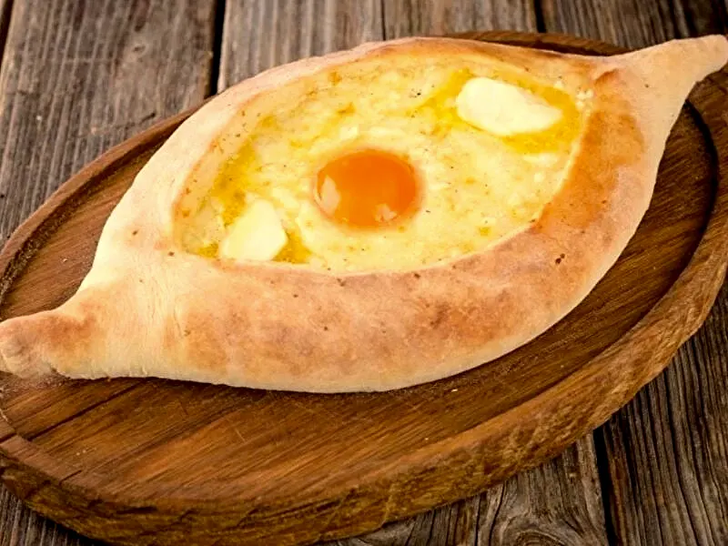
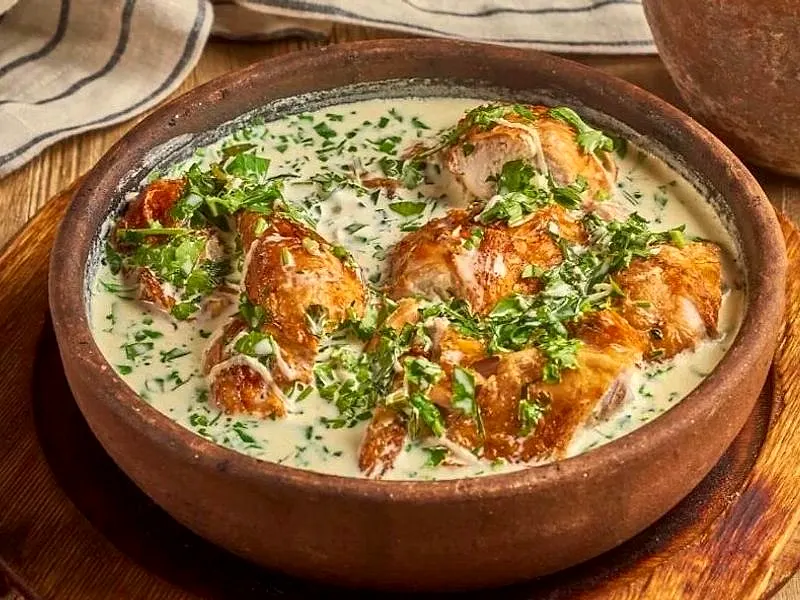

Как заказать
Закажите с телефона или компьютера: выберите блюда, оставьте адрес или выберите самовывоз – приготовим и привезём по Волгодонску или к вашему приходу.
-
Выберите блюда
Откройте меню, нажмите «+» у блюд – они попадут в корзину. Сумма считается сразу.
-

Оформите заказ
В корзине проверьте блюда, оставьте имя, телефон и адрес, выберите время и способ оплаты.
-

Получите заказ
Привезём горячим по Волгодонску за 60–90 минут или приготовим к вашему приходу, если выберете самовывоз.
Частые вопросы
Не нашли ответ – позвоните: +7 906 416-45-85
Можно ли заказать заранее?
Да. В корзине выберите «Ко времени» и укажите, когда привезти. Заказы принимаем ежедневно, 10:00–22:00.
Как оплатить заказ?
Онлайн картой на сайте, картой курьеру или наличными при получении. Способ выбираете при оформлении.
Сколько ждать доставку?
Обычно 60–90 минут: блюда готовим после заказа. В часы пик время может вырасти, оператор предупредит.
Сколько стоит доставка?
Доставка стоит 150 ₽, от 1 500 ₽ – бесплатно. Минимальная сумма заказа на доставку – 600 ₽.
Можно забрать заказ самому?
Да. В корзине выберите «Самовывоз» и время – приготовим к вашему приходу, обычно за 20–30 минут. Забрать можно на стойке: г. Волгодонск, ул. Весенняя, 56, фудкорт ТРЦ, 1 этаж.
Куда вы доставляете?
По Волгодонску. Если адрес далеко, оператор перезвонит и уточнит время.